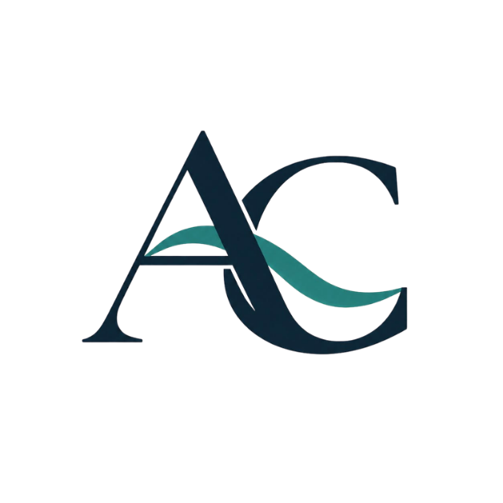

We are a small private foundation. Our capacity to fund is finite. But we believe in the value of collaboration — whether through co-funding, knowledge-sharing, or partnership. Here is how you can be part of this work.
We welcome connection from individuals, organizations, and other funders who share our values and want to explore collaboration. The right form of engagement depends on who you are and what you bring.
If you are a foundation or institutional funder working in Vietnam's social sector, we welcome conversations about shared learning, co-investment in specific partners, or joint field visits. We do not pursue co-funding as a fundraising goal — we pursue it when it serves the partner better than solo funding would.
Start a conversationWe are interested in connecting with researchers, practitioners, and sector experts whose work overlaps with our focus areas. If you are doing rigorous work on education access, ecosystem restoration, rare disease navigation, or related fields in Vietnam — we want to know about it.
Share your workWe currently do not accept individual donations to the Foundation directly. However, many of the partner organizations we fund do accept public donations. If you are looking for a way to contribute, we encourage you to explore them directly through our Event section.
Explore partner organizationsCo-funding works best when both parties share the same values about how funding relationships should work. Here is what we bring to a collaboration — and what we ask of peers.
Co-funding arrangements should simplify life for the partner, not create additional reporting burdens. We will work to align requirements where possible.
We share what we know about a partner with any co-funder they consent to us sharing with. We expect the same in return.
Neither funder should use joint funding as leverage to redirect a partner's strategy. We each fund the same work — we do not create confusion about who is in charge.
We are clear about what we can and cannot commit to. We expect peers to be the same. No funder should imply more than they can deliver.
"The best thing we can do as funders is stay honest, stay engaged, and get out of the way of the people who actually know how to do the work."— Anna Clerk, Founder
If you are a funder, researcher, or practitioner interested in connecting with us, we welcome your message. Please include a brief description of your work or the nature of your interest — we read everything, though we cannot promise a quick response.